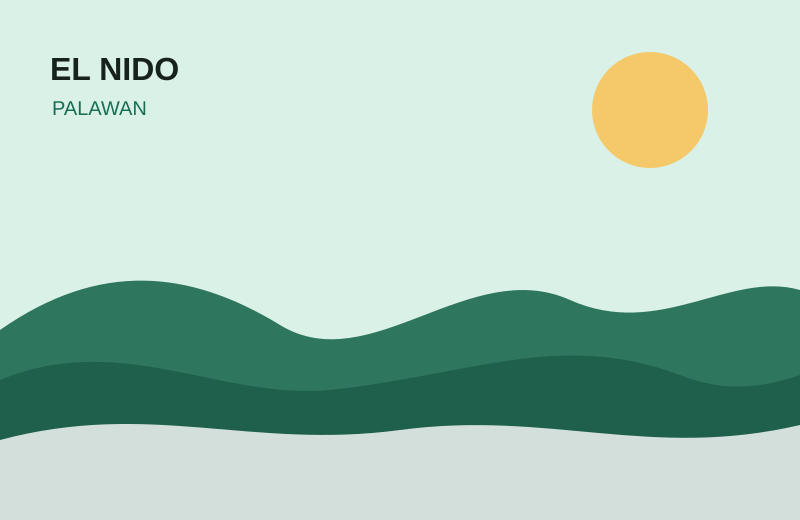

Featured destination
El Nido, Palawan
Lagoon views, limestone cliffs and island-hopping adventures.
See the collection →A student-built travel guide
Explore beaches, mountains, food destinations, culture and city escapes through a lightweight travel guide built for discovering the Philippines.

Featured destination
Lagoon views, limestone cliffs and island-hopping adventures.
See the collection →Why WanderPH?
WanderPH combines destination information, responsive design and JavaScript features to make Philippine travel discovery simple and useful.
Browse curated Philippine destinations and filter them by travel style.
View destination details including region, type, budget and recommended season.
Submit your travel preferences and create a simple starting point for your next adventure.
JavaScript-powered
data/destinations.json.